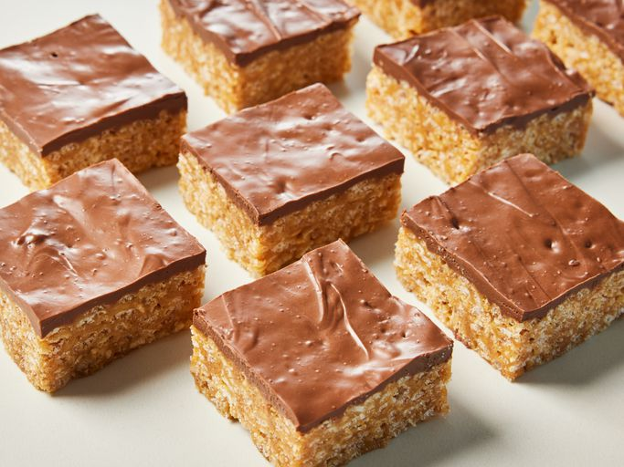

Scotcharoos

Description
Scotcharoos are a wonderful combination of peanut butter, chocolate, butterscotch, and rice cereal for a crispy texture. This recipe was my mother's and a favorite treat when I was a kid. My family loves them now!
Ingredients
- 1 tablespoon unsalted butter, or as needed
- 1 ½ cups peanut butter
- 1 cup light corn syrup
- 1 cup white sugar
- 6 cups crisp rice cereal
- ½ cup semisweet chocolate chips
- ½ cup butterscotch chips
Steps
- Gather all ingredients. Generously butter a 9x13-inch baking pan; set aside.
- Mix peanut butter, corn syrup, and sugar together in a large pot; cook and stir over medium heat until peanut butter melts. Bring mixture to a boil. Remove pot from the heat.
- Stir in rice cereal until well combined.
- Transfer mixture into the prepared pan and pat it down with buttered hands.
- Melt chocolate chips and butterscotch chips in a medium saucepan over medium-low heat; stir until smooth.
- Spread over top of bars.
- Cool completely, about 20 minutes, before cutting into 24 squares.
Back to Odin Recpies